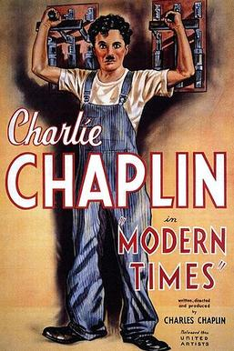
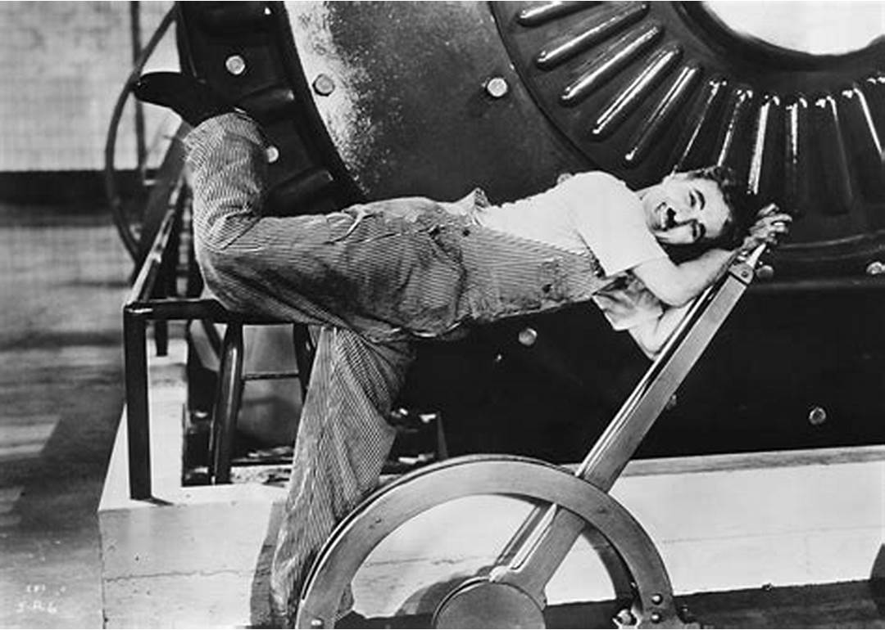

基本信息《摩登时代》（英语：Modern Times）是一部1936年的无声喜剧电影，由查理・卓别林执导和编剧，被认为是美国电影史上最伟大的电影之一，也是查理・卓别林最著名的作品之一。 本片故事发生在美国20世纪30年代经济大萧条时期，工人查理（卓别林 饰）在工厂干活、发疯、进入精神病院，这一切都是与当时的经济危机给人们带来的生存危机有着密切的联系。而在艰难的生活中，查理和孤女相濡以沫，场面温馨感人焕发着人性的光辉。 |
 |
剧情简介查理是一个普通的工人，生活在社会的最底层。每天的生活就是日复一日发疯般地工作，以期能够获得填饱肚子的可怜工资。虽然生活昏暗无比，但查理还是努力地奋斗着。不过面对时代的萧条大潮，查理依然无法保证自己的生活，那怕是最低的要求。 工厂的管理层疯狂地压榨员工，昏天黑地的工作使人们开始麻木；查理也成为了其中的一员。他成天挣扎在生产流水线上的，由于他的任务是扭紧六角螺帽，结果最后在他的眼睛里唯一能看到的东西就是一个个转瞬即过的六角螺帽。结果，在查理的生活中一切六角形的东西都遭了殃，因为只要看见六角形的东西查理就会情不自禁地去扭。大街上一位裙子上带有六角形纽扣的女人就惨遭查理的毒手。 但工厂老板可不会停手，他甚至认为工人吃饭的时间都过长，于是美其名曰为了提高工人的工作效率，又引进了全新的吃饭机。这种吃饭机可以在最短的时间内“喂”工人吃完饭，这样自然而然就可以省下大量的时间用于工作。而查理则很不幸地成为了“试用品”，谁知试用的过程中机器出现了问题，不但无法停止，还开始发狂，结果搞得查理也几近疯狂。 最终，查理还是失业了，他极不情愿但又无可奈何地成为失业大军中的一员。随后他无意中成为了示威运动的领导者，但依然无法改变自己的命运。查理在痛定思痛地想过之后，发现唯一不用担心饿死和操心生计的地方是监狱！于是他又开始策划如何进监狱，但他想尽了一切办法包括替人顶罪都无法使自己进入监狱。 不过再艰苦的生活都无法改变查理善良的本性，虽然他自己都无法保证温饱，他还是在街头搭救了一个偷面包的流浪女子，并获得了这个女子的爱情，两人相依为命一同度过这个“摩登时代”…… 图为《摩登时代》剧照，“疯狂”的查理正在拉动手柄、笑对观众。  |
豆瓣影评《摩登时代》可以说是卓别林的代表作，正向片语说的那样“本片讲述工业时代，个人、企业与人类追求幸福的冲突”。即使在七十多年后的今天，我在看影片时，同样产生了很多共鸣。 男主人公夏尔洛是个摩登时代大工厂的一个流水线工人，一天到晚神经质般的重复着同样的工作，连去厕所抽根烟的享受都被无情自私的资本家剥夺了，最后由于不堪重负，夏尔洛精神失常，被工厂送到了精神病医院，同时他也失去了赖以生存的工作。不久，他出院了。可是在大街上，他却被警察误认为是工人暴动的领袖而关入了监狱。在监狱中，他又误食海洛因导致兴奋而戴罪立功，一系列荒诞的情节发生在夏尔洛身上，最后他被提前释放，监狱长对他说：“你自由了。”可夏尔洛却说：“可以再多关我几天吗，我待在这里很好”。也许只有在那个荒诞的年代，才有夏尔洛这样荒诞的想法。 的确，他在外面确实还不如在监狱中，虽然获得了表面自由，但是他却依然生活在一个更大的牢笼中，在这个牢笼中，有钱的人随心所欲，无产者无家可归。之后，夏尔洛遇到了同样是流浪者的女主角，在一系列奇遇后，女主角爱上了夏尔洛，他们找到了属于自己的天堂――一个河边的小破木屋。他们曾经也幻想过理想中的天堂，比如一个富人家的别墅中的生活，比如大百货商场中的快乐时光，但是这些仅仅是幻想，真正属于他们的天堂，也仅仅是那个河边的小破木屋。在这里，我看到了他们从来没有的温馨与幸福。 影片最后，夏尔洛和漂亮的女主角再次走在逃亡的路上，但是这一章的标题是“黎明”。我想卓别林更希望他们是走在通往黎明的道路上，夏尔洛看到女主角紧锁着眉头，他告诉她应该笑，应该向着黎明微笑，这也是卓别林带给我们一系列艰辛，悲苦，荒诞后给我们的一丝希望。 七十多年后的今天再看这部影片，丝毫也没感到时间的流逝，今天，就在我的身边又何尝不是每天都在发生电影里的故事呢。也许我的周围就有许许多多的夏尔洛，也许根本我就是夏尔洛，谁知道呢。 写到这里，想起影片一开始的一个片段，第一个镜头是许多羊群争先恐后的挤出羊圈，随后紧接着切入了一个许多工人下班拥挤的走出工厂的镜头。看到这里，我想到了我自己，每天上下班时的地铁站口，我随着成千上万的人群进进出出的场景。我认为摩登时代一开始的那两个镜头完全有理由成为电影史上最伟大最经典的蒙太奇。 正如狄更斯所言，这是最好的时代，这是最坏的时代。 |